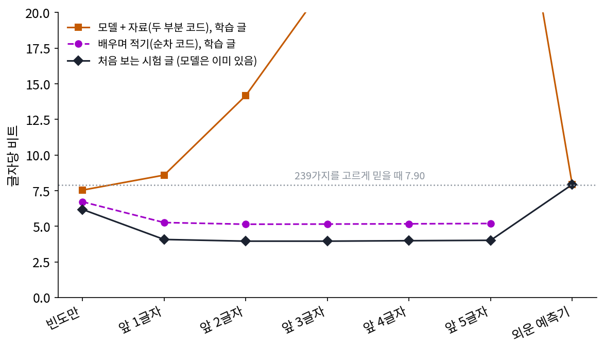
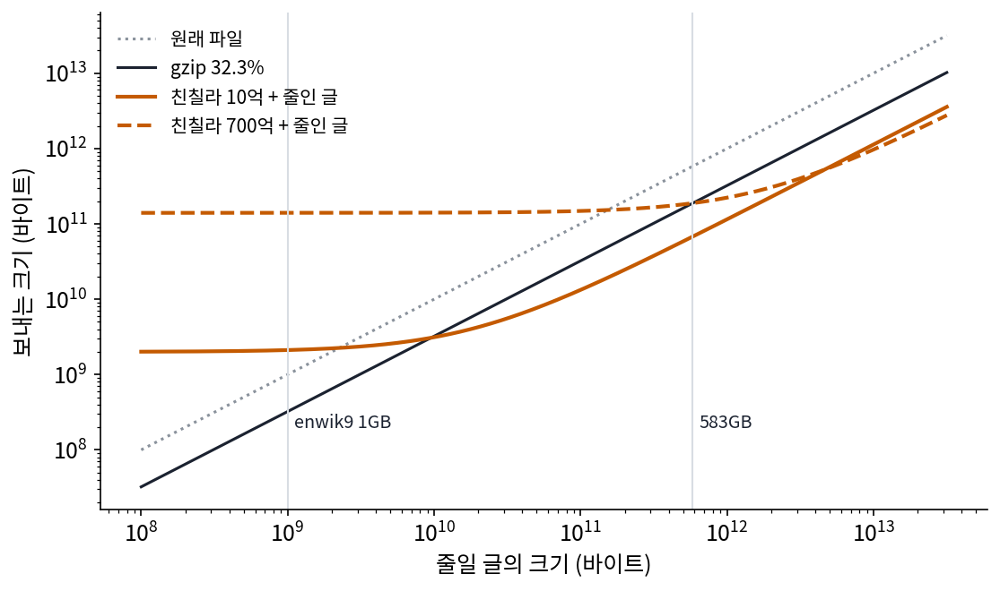

압축의 두 뜻: 이 파일을 짧게, 원천을 잘 예측
고친 압축률로 다시 세운 빵집 이야기의 표에는 걸리는 데가 있다. 모델까지 적은 합으로는 빈도만 보는 예측기가 1등(12,519비트)이었는데, 처음 보는 일요일 이야기를 적을 때는 앞 2글자 예측기가 1등(1,131비트, 빈도만은 1,768비트)이었다. 같은 예측기들을 두고 「어느 것이 더 잘 압축하나」의 답이 둘로 갈린 것이다. 둘 가운데 어느 쪽이 「압축을 잘한다」는 말의 뜻일까?
역사: 자료가 클수록 큰 모델을 감당할 수 있다
허터 상을 연 사람들은 글 압축과 인공지능이 같은 문제라고 보았고, 위키백과를 잘 줄이는 것을 그 시험으로 삼았다. 그러나 이 상의 기록을 세운 것은 여러 예측기의 확률을 섞어 산술 코딩에 넣는 압축기들이었고, 큰 언어 모델은 그래픽 카드 없이 CPU 하나로, 정해진 시간과 메모리 안에서 풀어야 한다는 규칙 때문에 맞지 않았다. 큰 모델이 위키백과 1GB 의 압축 대회에 맞지 않는 까닭을 델레탕 외는 숫자로 보였다. enwik8 로 학습한 트랜스포머를 크기별로 enwik7(10MB), enwik8(100MB), enwik9(1GB)에 대 보니, 고친 압축률이 가장 낮은 모델 크기가 자료가 클수록 커졌다. 그들은 이것을 「자료가 클수록 더 많은 파라미터를 감당할 수 있다」, 그리고 「스케일링 법칙은 사실 평가 자료의 크기에 달렸다」고 정리했다.
2023년 8월, 오픈AI 의 서츠케버(Ilya Sutskever)는 버클리 사이먼스 연구소의 큰 언어 모델 워크숍에서 「일반화에 대한 한 관찰(An Observation on Generalization)」이라는 강연을 했다. 연구소의 소개는 「비지도 학습의 한 이론」이라고만 적었고, 강연을 전한 기사들에 따르면 좋은 압축기가 좋은 예측기가 된다는 압축의 눈으로 비지도 학습을 설명하려는 내용이었다고 한다. 강연의 세부는 이 책에서 다루지 않는다.
같은 예측기, 세 가지 잣대
빵집 이야기에서 잣대를 하나 더 해 보자. 최소 기술 길이에서 본 순차 코드는 표를 따로 보내지 않는다. 학습 글의 첫 글자부터, 앞에서 이미 적은 글로만 센 표로 다음 글자를 적고, 적고 나면 표에 그 글자를 더한다. 받는 쪽도 같은 순서로 표를 만들어 가므로 표를 받을 필요가 없다. 처음에는 표가 비어 있어 비싸게 적지만, 그 비쌈이 곧 모델을 배우는 값이다.
| 예측기 | 두 부분 코드 (학습 글) | 순차 코드 (학습 글) | 시험 글, 글자당 |
|---|---|---|---|
| 빈도만 | 12,519 (7.54) | 11,160 (6.72) | 6.18 |
| 앞 1글자 | 14,271 (8.59) | 8,738 (5.26) | 4.07 |
| 앞 2글자 | 23,542 (14.17) | 8,542 (5.14) | 3.95 |
| 앞 3글자 | 36,799 (22.16) | 8,560 (5.15) | 3.95 |
| 앞 4글자 | 52,246 (31.45) | 8,590 (5.17) | 3.99 |
| 앞 5글자 | 69,084 (41.59) | 8,627 (5.19) | 4.01 |
(괄호 안은 글자당 비트.) 순차 코드로 재면 앞 2글자 예측기가 1등이고, 그 8,542비트는 두 부분 코드의 어느 값보다도 짧다. 표를 「글자 + 횟수」로 하나하나 적은 이 책의 방법이 표를 적는 가장 짧은 방법이 아니었다는 뜻이다. 순차 코드의 순위는 처음 보는 글의 순위와 같다.

두 뜻을 이렇게 가를 수 있다. 첫째 뜻은 이 파일 하나를 짧게 적는 것이다. 받는 쪽은 아무것도 모르고, 풀이 프로그램도 모델도 모두 길이에 든다. 허터 상과 고친 압축률이 이 뜻이다. 둘째 뜻은 이 원천에서 나올 글을 잘 예측하는 것이다. 모델은 이미 받는 쪽에 있다고 보고, 처음 보는 글 한 글자에 드는 비트만 잰다. 앞으로 나올 글이 끝없이 많다면 모델 한 벌의 비용은 글자마다 나누어 0에 다가간다. 언어 모델의 시험 손실과 바이트당 비트, 델레탕 외의 원래 압축률이 이 뜻이다. 순차 코드는 그 사이에 있다. 모델을 따로 적지 않지만, 모델을 배우는 동안 비싸게 적은 비트가 모델의 값으로 들어간다.
같은 예측기라도 줄일 글이 얼마나 크냐에 따라 첫째 뜻의 답이 바뀐다. 델레탕 외의 원래 압축률이 그대로라고 두고 「모델 + 줄인 글」을 자료 크기에 따라 그리면, 친칠라 700억 개는 583GB 를 넘어서야 gzip 보다 짧아진다.

ML에서: 스케일링 법칙을 코드 길이로 다시 읽기
최적화 책에서 본 친칠라의 손실 식을 코드 길이로 읽어 보자. 파라미터 N 개인 모델을 토큰(모델이 글을 끊어 읽는 낱말 조각) n 개로 학습하면 처음 보는 글의 손실(토큰 하나에 드는 nat. nat 은 자연로그로 잰 정보의 단위로, 1 nat = 1/ln 2 ≈ 1.443비트)이 다음 꼴로 줄어든다. 논문은 첫 항을 E 로 적지만, 이 책에서는 그 뜻에 맞춰 엔트로피 색의 H 로 적는다.
첫째 항 H 는 원천의 엔트로피, 곧 어떤 예측기로도 그 아래로 내려갈 수 없는 손실의 가장 낮은 값이다. 둘째 항은 모델이 작아서 더 드는 비트, 셋째 항은 자료가 모자라서 더 드는 비트다. 베시로글루 외(2024)가 다시 맞춘 상수(H = 1.8172, A = 482.01, B = 2,085.43, α = 0.3478, β = 0.3658)를 친칠라(N = 700억, n = 1.4조)에 넣으면 손실은 1.9739 nat, 토큰 하나에 2.848비트다. 그 가운데 엔트로피 항 H 가 2.622비트이고, 모델이 작아서 0.0815 nat, 자료가 모자라서 0.0752 nat 이 더 든다.
이 손실은 처음 보는 글의 손실이라, 학습 토큰 자체를 적는 비트로 쓰는 것은 어림이다. 그래도 그렇게 어림해 보면 친칠라의 학습 토큰 1.4조 개를 적는 비트는 3.99 × 10¹², 파라미터 700억 개를 16비트씩 적는 비트는 1.12 × 10¹²로, 모델이 합의 21.9% 다. 위키백과 1GB 에서는 모델이 줄인 글의 천 배가 넘었는데, 자기 학습 자료 앞에서는 모델이 다섯 분의 일쯤이다. 같은 식으로 「토큰 n 개를 모델까지 적을 때 합이 가장 짧은 N」을 찾으면, n = 10⁹ 일 때 약 3,560만 개, 10¹¹ 일 때 약 10.9억 개, 10¹³ 일 때 약 331억 개로 자료와 함께 커진다. 델레탕 외의 「자료가 클수록 더 많은 파라미터를 감당할 수 있다」를 손실 식으로 다시 본 것이다.
문제 7. 배우며 적기와 개수부터 적기
두 글자 「가」「나」만 나오는 줄을 적는다. 순차 코드는 라플라스의 규칙을 쓴다: 지금까지 i 글자를 적었고 그 가운데 「가」가 a 번이면 다음이 「가」일 확률은 (a + 1)/(i + 2). 두 부분 코드는 먼저 「나」의 개수 k(0부터 n 까지, n + 1 가지)를 log₂(n + 1) 비트로, 다음에 n 자리 가운데 「나」가 있는 자리의 조합을 log₂ C(n, k) 비트로 적는다. (가) 「가가가나」와 「나가가가」의 순차 코드 비트를 구하라. (나) 두 부분 코드의 비트와 비교하라. (다) 「가나가나가나가나」에서도 확인하라.

「가가가나」는 1/2, 2/3, 3/4, 그다음 「나」가 1/5 이니까 1 + 0.585 + 0.415 + 2.322 = 4.322비트요. 「나가가가」는 「나」가 처음이라 확률이 커지는 순서가 다르니까 값도 다르겠죠?

계산해 봐요.

1/2, 1/3, 2/4, 3/5… 곱하면 1/2 × 1/3 × 1/2 × 3/5 = 1/20. 「가가가나」도 1/2 × 2/3 × 3/4 × 1/5 = 1/20. 둘 다 4.322비트예요. 순서가 달라도 같네요.

(나)는 log₂ 5 + log₂ C(4, 1) = 2.322 + 2 = 4.322비트. 두 부분 코드랑 똑같아. 1/20 = 1/5 × 1/4 이고, 5가 개수의 가짓수, 4가 자리의 가짓수야.
(다)는 순차 코드가 9.299비트, 두 부분은 log₂ 9 + log₂ C(8, 4) = log₂ 9 + log₂ 70 = 9.299비트.

또 같아. 세 번이면 우연은 아니겠지?
순차 코드의 곱을 그대로 펼쳐 볼까요? 분모만 먼저 모아 보면요?
분모는 2, 3, 4, … 로 하나씩 커지다가 n + 1 에서 끝나니까 (n + 1)! 이에요. 분자는… 「가」가 나올 때마다 1, 2, …, a 가 쌓이고 「나」도 1, 2, …, k 가 쌓이니까 a! × k! 이고요.

그럼 곱이 1/((n + 1) C(n, k)) 로 정리되네. 순서가 달라도 같았던 것도 이거였어. 분자에 쌓이는 수가 순서와 상관없으니까.

그래요. 라플라스의 규칙으로 배우며 적은 비트는 「개수를 적고, 그 개수 안에서 어느 줄인지 적는」 두 부분 코드와 똑같아요. 표를 따로 보내지 않아도, 배우는 동안 낸 비트가 표의 값을 치르고 있었던 거예요.

조별 과제에서 규칙표를 먼저 나눠 주는 대신, 일하면서 하나씩 정하면 처음엔 시행착오 비용이 드는데 결국 규칙표 만드는 비용이랑 비슷해지는 거네요.
문제 8. GPT-3 의 학습 자료 앞에서 모델은 얼마나 큰가
GPT-3 의 가장 큰 모델은 파라미터 1,750억 개를 토큰 3,000억 개로 학습했다. 다시 맞춘 친칠라 손실 식(H = 1.8172, A = 482.01, B = 2,085.43, α = 0.3478, β = 0.3658)과 파라미터 하나에 16비트로, (가) 손실과 토큰당 비트, (나) 학습 토큰을 적는 비트와 모델 비트, 합에서 모델 비트가 차지하는 비율을 구하라. (다) 친칠라(모델 비트의 비율 21.9%)와 비교해 무엇을 말할 수 있는가?
(가) 손실은 1.8172 + 482.01/(1.75 × 10¹¹)^0.3478 + 2,085.43/(3 × 10¹¹)^0.3658 = 2.0085 nat, 비트로는 2.898비트예요. (나) 학습 토큰은 3 × 10¹¹ × 2.898 = 8.69 × 10¹¹ 비트, 모델은 16 × 1.75 × 10¹¹ = 2.80 × 10¹² 비트. 모델 비트가 합의 76.3% 예요.
토큰 하나에 모델 비트가 몇 비트씩 얹힌 셈인가요?

2.8 × 10¹² ÷ 3 × 10¹¹ = 9.33비트요. 토큰 자체를 적는 데는 2.9비트인데 모델 값이 그 세 배 넘게 얹혀요. 친칠라는 0.80비트였고요.
GPT-3 는 모델에 비해 자료가 적었던 거야. 같은 계산량이면 모델을 줄이고 토큰을 늘리라는 친칠라의 결론을, 「모델 + 자료」 코드 길이로 봐도 같은 쪽을 가리키네.

그런데 이상해요. 이 셈은 첫째 뜻, 학습 자료라는 파일 하나를 짧게 적는 뜻이잖아요. GPT-3 를 쓰는 사람은 학습 자료를 되살리려는 게 아니라 처음 보는 글을 다루려는 거고요.
좋은 지적이에요. 모델을 수많은 사용자가 쓰는 처음 보는 글에 계속 쓴다면 모델 값은 그 모든 글에 나뉘어 둘째 뜻에 가까워져요. 어느 뜻으로 재느냐는 그 모델을 무엇에 쓰느냐가 정해요.

확률 수업에서 기댓값은 같아도 몇 번 반복하느냐에 따라 전략이 갈리던 것과 비슷하네요. 한 번뿐인 내기와 만 번 하는 내기는 다르게 놓잖아요.